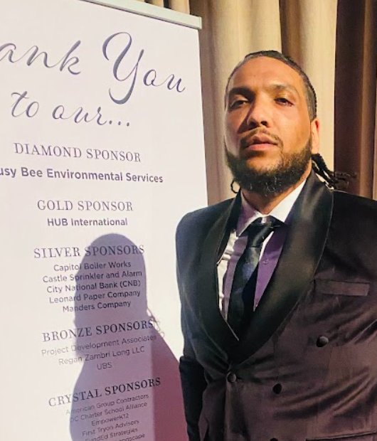

Club Leadership
Leadership is how we make the club sustainable.
Friendship Speaker’s Circle is led by a volunteer executive board working together to create a strong member experience, consistent meetings, meaningful growth, and a culture where leadership is shared—not concentrated in one person.
Executive Board
Seven roles. One leadership team.
Each officer has a distinct responsibility, but the strongest boards communicate across roles and solve problems together.

President
President
Abdul Dopson
Sets the tone for the club, protects the mission, leads the executive team, and ensures the club keeps moving toward its goals.
- Lead with clarity and consistency
- Keep the board aligned
- Protect member experience
- Represent the club professionally
Primary focus: direction, culture, accountability
Vice President Education
Vice President Education
William Foster
Owns the educational experience of the club and helps members progress through speeches, meeting roles, and Pathways.
- Coordinate speeches and roles
- Support Pathways progress
- Help members set learning goals
- Strengthen meeting quality
Primary focus: member growth
Vice President Membership
Vice President Membership
Brandy Winchester
Welcomes guests and new members, supports onboarding, and helps members stay connected to the club.
- Follow up with guests
- Support onboarding
- Track member engagement
- Help members feel included
Primary focus: belonging and retention
Vice President Public Relations
Vice President Public Relations
Monique Miller
Shares the story of the club and promotes meetings, accomplishments, events, and member success.
- Promote meetings and events
- Celebrate member wins
- Maintain public-facing messaging
- Support recruitment and visibility
Primary focus: visibility and storytelling
Secretary
Secretary
Vacant
Keeps the club’s records organized so decisions, commitments, action items, and important documents are not lost.
- Record key decisions
- Track action items
- Maintain club records
- Support follow-through
Primary focus: continuity and documentation
Treasurer
Treasurer
Tatiana Peters
Supports responsible stewardship of club funds, dues, payments, and financial records.
- Track dues and payments
- Maintain accurate records
- Support budgeting
- Communicate financial needs clearly
Primary focus: stewardship
Sergeant at Arms
Sergeant at Arms
Neko Ramos
Protects the meeting environment by helping meetings start smoothly, feel welcoming, and end professionally.
- Open and close meetings
- Support room or virtual setup
- Welcome members and guests
- Help maintain meeting order
Primary focus: meeting environment
Leadership roster: Current officer names are now listed. Photos, professional bios, and optional contact information can be added as the leadership page continues to develop.
Club Mentor
Kimbaley
The Club Mentor supports Friendship Speaker’s Circle as an organization. This role brings an experienced Toastmasters perspective to club leadership, meeting quality, member development, and long-term sustainability.
Kimbaley’s role is different from the board member mentor role. The Club Mentor supports the health of the club; board mentors provide direct support to individual members.
How the Board Works
A predictable leadership rhythm.
Good leadership becomes easier when communication and follow-through happen on a regular schedule.
Monthly
Board Meeting
Review concerns, action items, member needs, deadlines, and upcoming meetings.
Ongoing
Mentor Outreach
Board mentors stay connected with assigned members and share relevant resources or support.
Before Meetings
Operational Check
Confirm roles, speakers, agenda readiness, and any member support needs.
After Meetings
Close the Loop
Capture action items, attendance, awards, role gaps, and one improvement for the next meeting.
Leadership Standards
What members should be able to expect from the board.
Titles do not create trust. Consistent behavior does.
Board Commitments
- Prepare for meetings and leadership responsibilities.
- Communicate respectfully and professionally.
- Complete action items by agreed-upon deadlines.
- Ask for help before responsibilities become emergencies.
- Keep member information and sensitive conversations appropriate.
- Model the participation expected from members.
Member-Facing Leadership
- Welcome questions without making members feel burdensome.
- Explain processes instead of assuming members already know them.
- Celebrate growth and effort publicly.
- Address concerns privately and respectfully.
- Connect members with the right officer or resource quickly.
- Help members become more independent over time.
Shared Accountability
The board should not depend on one person.
Healthy club leadership means systems continue even when one officer is absent. Documentation, clear ownership, mentoring, and predictable routines make the club stronger than any individual leader.
Every action item: owner + due date
Every meeting: roles confirmed in advance
Every member: knows where to get support
Every officer: develops someone else
For Officers
Open the Officer Hub
Board planning, action items, officer training, mentor assignments, and other protected leadership resources are organized in one place.